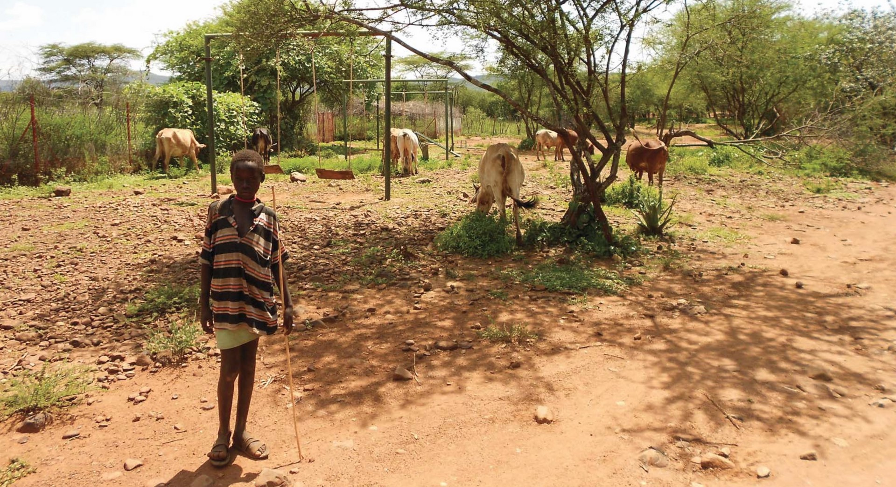
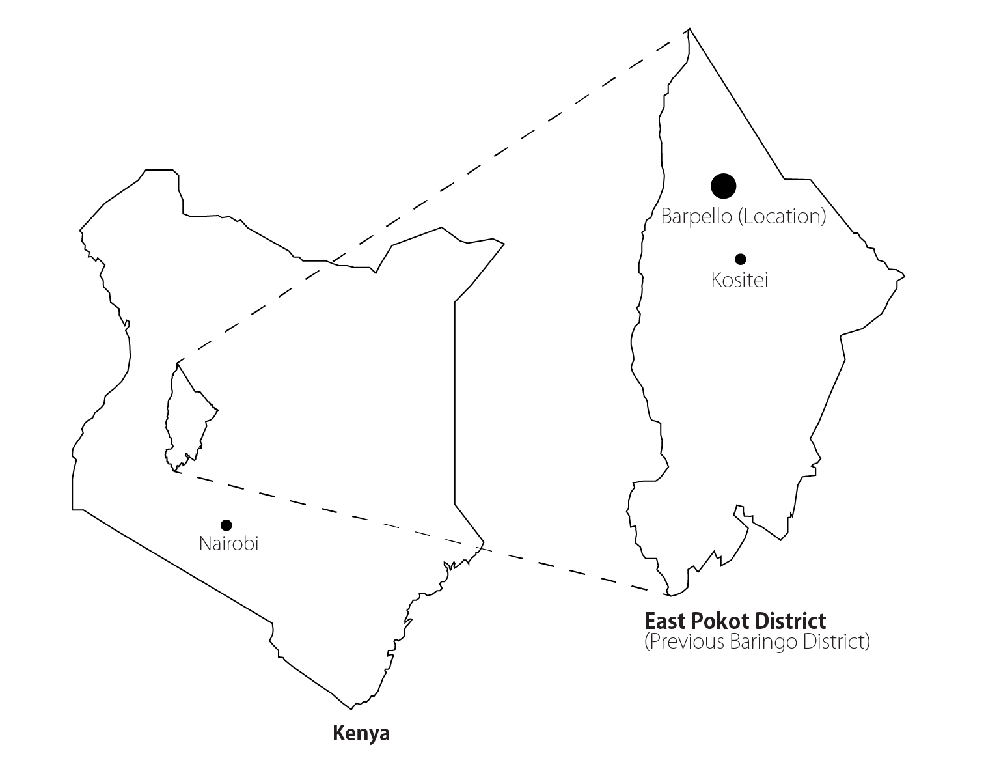

PROJECT
The Pokot tribe, living in the remote East Pokot region of Kenya, has little to no access to health care. Moreover they have to cope with challenging living conditions, such as prolonged droughts and often failing health, partly due to lack of knowledge about hygiene, Female Genital Mutilation, malaria and HIV/aids.
Together with the tribe and a local medical organization (EPMP - East Pokot Medical Project), we propose to construct the Pokot Resource Centre, which facilitates information and meetings on health issues and use of local resources. The goal of centre is to empower the Pokot community in Kositei and Barpello (around 9,000 people) to improve their living situation and wellbeing.
The Pokot Resource Centre will form a compound with the planned Pokot Health Clinic, which replaces the nearby deteriorated clinic. The new clinic will provide basic health care, vaccinations, medication and support during childbirth.
We (Carlijn Kingma, Niek van Laere and Stefanie Tseggai) are three architecture graduates from Delft University of Technology and we have been working with the Pokot and the EPMP since 2012. This year four students from civil engineering, industrial design and construction management of Delft University of Technology joined the team.
